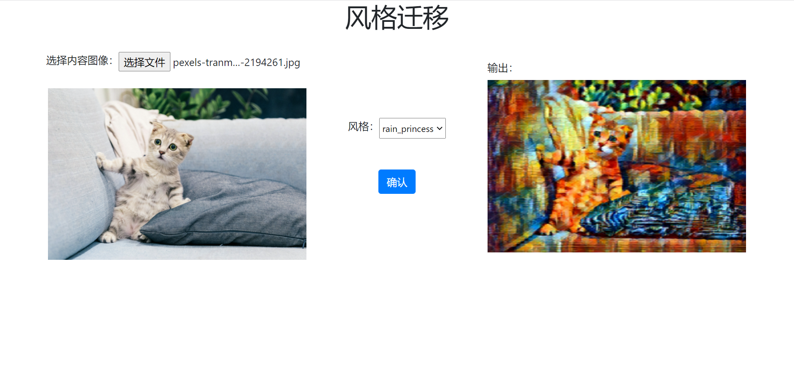

Model Deployment¶
Trained model needs to go through "Model Deployment" before it can be integrated into the product and launched. Because the software and hardware environment and the connection method between models and business modules may change when the product is launched, the deployed solutions are also varied. For example, some solutions convert the trained model to other formats (such as ONNX), and then rely on a specific runtime deployment; some solutions will directly use C/C++ or other languages that can generate native code to re-implement the model, and introduce code optimization in pursuit of hardware adaptation or deployment performance.
OneFlow provides services for the model by docking with the Triton Inference Server.
After training the model, OneFlow's users can deploy the model directly through Triton, use the rich features of Triton, such as Dynamic batching, Model Pipelines, and HTTP/gRPC interface to integrate it into online products quickly and efficiently.
This document is divided into the following three sections:
- Quick Start
- Introduction to OneFlow Serving Architecture
- Process from Model Training to Deployment in OneFlow
Quick Start¶
OneFlow Serving: Neural Style Transfer is available on OneFlow Cloud. By referring to the project description, you can deploy the project and see the running result with just one click.

Analyzing the code, we can find the following key points:
-
Triton server and WEB application server are started in
run_cloud.sh:/opt/tritonserver/bin/tritonserver --model-store $(pwd)/model_repo > 1.txt & python3 server.py -
There are simple and normal URL routings in
server.pyfile andstylizeininfer.pyfor inference work. Its result is obtained inside thestylizefunction through interacting with the HTTP and Triton server.def stylize(content_path, output_path, style='udnie'): triton_client = httpclient.InferenceServerClient(url='127.0.0.1:8000') ... inputs.append(httpclient.InferInput('INPUT_0', image.shape, 'FP32')) ... outputs.append(httpclient.InferRequestedOutput('OUTPUT_0', binary_data=True)) ... -
Pretrained models are placed under
model_repo, whose hierarchy is organized according to Triton's conventions.
This simple online example illustrates how OneFlow models can be deployed through Triton and how business modules interact with the Triton server to obtain inference results.
If you want to run this example locally, download demo.zip, then unzip it and run the file run.sh.
bash run.sh
Next we will introduce the detailed process from training to deployment in OneFlow.
Process from Model Training to Deployment in OneFlow¶
The following figure gives you a general description of the relationship between OneFlow and Triton.

It can be seen that Triton is in the position of connecting the client and OneFlow: it provides HTTP, gRPC, and C interfaces, so that users can flexibly make an inference request and get the result.
In Triton's architecture, OneFlow and Model Repository provide Triton with backend inference capabilities. OneFlow provides a corresponding interface to export the trained model that is under Triton's rule.
In addition, Triton also provides built-in features such as task scheduling to ensure better performance. For details, refer to Triton's official documentation.
After understanding these basic concepts, let's analyze the process from model training to deployment in OneFlow:
- Model saving
- Model deployment
- Start service
- Client request
Model Saving¶
The model trained in Graph mode can be directly exported in the required format for deployment through oneflow.save; if it is trained in Eager mode, after simple conversion, it can be exported in the required format. For details, refer to Graph and Deployment.
Model Deployment¶
Triton has certain requirements for the layout of the model, so we need follow Triton's convention to organize the model layout and write related configuration files.
Layout
In this example program, the model files are placed in the model_repository directory, and its layout conforms to Triton's conventions. Let's see how it is organized:
$ tree -L 3 model_repository/
model_repository/
└── fast_neural_style
├── 1
│ └── model
└── config.pbtxt
model_repositoryis the root directory of the model repository. When starting Triton, you can specify it through the--model-repositoryoption.fast_neural_styleis a model in the repository. There can be multiple models in a repository, and each first-level sub-directory is a model. Here we only have thefast_neural_stylemodel.- The
1/modeldirectory is the model we saved earlier throughflow.save(graph, "1/model").1is the version number. In Triton, there can be multiple model versions in a model directory, and the folder name of the model version must be number. Under the model version folder, you need to place a folder namedmodel, which saves model parameters and computation graphs. config.pbtxtis a plain text file used to configure the basic information of the model repository, explained as follows.
Model repository configuration
config.pbtxt is a configuration file in protobuf text format. By writing this file, you can configure model services, such as specified hardware, input, and output. The example is as follows:
name: "fast_neural_style"
backend: "oneflow"
max_batch_size: 1
input [
{
name: "INPUT_0"
data_type: TYPE_FP32
dims: [ 3, 256, 256 ]
}
]
output [
{
name: "OUTPUT_0"
data_type: TYPE_FP32
dims: [ 3, 256, 256 ]
}
]
instance_group [
{
count: 1
kind: KIND_GPU
gpus: [ 0 ]
}
]
Next we explain the configuration items one by one.
name: "fast_neural_style"
The name field is used to specify the model. This line indicates that we use the fast_neural_style model, whose name needs to be the same as the model's folder name mentioned above.
backend: "oneflow"
backend specifies the Triton backend. If you deploy with Oneflow, this field must be specified as oneflow.
Next we need to define the shapes of input and output. For the name field, we need to follow the input and output order of the model and the format is INPUT_<index> and OUTPUT_<index>, where <index> indicates the order of model's input or output. Start at 0 by default. The data_type field defines the data type, and dims defines the shape of the tensor.
input [
{
name: "INPUT_0"
data_type: TYPE_FP32
dims: [ 3, 256, 256 ]
}
]
output [
{
name: "OUTPUT_0"
data_type: TYPE_FP32
dims: [ 3, 256, 256 ]
}
]
The above model name, inference backend, and input and output configuration are the most basic configurations. Once configured, OneFlow can start working.
instance_group is used to configure hardware information.
instance_group [
{
count: 1
kind: KIND_GPU
gpus: [ 0 ]
}
]
It means we instantiate one model and place it on GPU 0. For more configuration options, refer to Model Configuration Documentation for Triton Inference Server.
Start Service¶
OneFlow Serving provides Docker images with which you can start model service. After organizing the files according to the above layout, you can map the path to the container and start the service.
docker run --rm --runtime=nvidia --network=host -v$(pwd)/model_repository:/models \
oneflowinc/oneflow-serving /opt/tritonserver/bin/tritonserver --model-store /models
Run the command below to check whether the model service is starting. When you see the http 200 status code, the service has started.
curl -v localhost:8000/v2/health/ready
Request to Triton Server¶
In this example, we use tritonclient to interact with Triton Server. We need to install a python package first.
pip3 install tritonclient[all]
Actually, clients can interact with Triton Server via HTTP, gRPC or C API etc..
The following code is the core part of image stylization, which can stylize the images passed from the command. You can view the complete code on Cloud Platform, or download demo.zip.
#...
import tritonclient.http as httpclient
if __name__ == '__main__':
parser = argparse.ArgumentParser()
parser.add_argument('--image',
required=True,
help='the image to transfer style')
FLAGS = parser.parse_args()
triton_client = httpclient.InferenceServerClient(url='127.0.0.1:8000')
image, w, h = load_image(FLAGS.image, 256, 256)
inputs = []
inputs.append(httpclient.InferInput('INPUT_0', image.shape, 'FP32'))
inputs[0].set_data_from_numpy(image, binary_data=True)
outputs = []
outputs.append(httpclient.InferRequestedOutput('OUTPUT_0', binary_data=True))
results = triton_client.infer('fast_neural_style', inputs=inputs, outputs=outputs)
output0_data = results.as_numpy('OUTPUT_0')
image = recover_image(output0_data, h, w)
cv2.imwrite('result.jpg', image)
First create a triton_client where 127.0.0.1:8000 is the default port for the Triton service.
triton_client = httpclient.InferenceServerClient(url='127.0.0.1:8000')
Then through the triton_client.infer interface, you can send an inference request to the Triton Server and get the output.
A Tirton inference request needs to specify the model, input and output.
The following code is mainly constructing input and output objects. The configuration is consistent with that in the config.pbtxt. And the inference request is sent through triton_client.infer('fast_neural_style', inputs=inputs, outputs=outputs). The fast_neural_style is also the same as the one in config.pbtxt.
inputs = []
inputs.append(httpclient.InferInput('INPUT_0', image.shape, 'FP32'))
inputs[0].set_data_from_numpy(image, binary_data=True)
outputs = []
outputs.append(httpclient.InferRequestedOutput('OUTPUT_0', binary_data=True))
results = triton_client.infer('fast_neural_style', inputs=inputs, outputs=outputs)
Convert the format of the obtained inference result and save the result as the output image:
output0_data = results.as_numpy('OUTPUT_0')
image = recover_image(output0_data, h, w)
cv2.imwrite('result.jpg', image)
You can use the following command to infer and stylize images, and the result will be saved in result.jpg.
$ curl -o cat.jpg https://images.pexels.com/photos/156934/pexels-photo-156934.jpeg
$ python infer.py --image cat.jpg